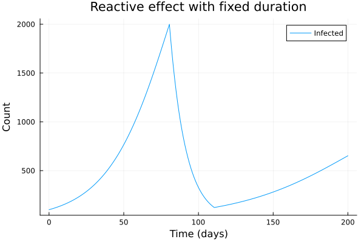

SIR Model Example
This example demonstrates EpiEvents.jl with a simple compartmental SIR (Susceptible-Infected-Recovered) epidemic model.
EpiEvents provides a simple SIR model that can be used directly or as a template.
using OrdinaryDiffEq
using EpiEvents
using Plots# Initial conditions
N = 100_000 # population size
I0 = 100 # initial infected
S0 = N - I0
R0 = 0
u0 = [S0, I0, R0]
# Parameters (using the exported SIRParams struct)
params = SIRParams(
1.3 / 7.0, # beta: transmission rate
1.0 / 7.0 # gamma: recovery rate
)
# Time span: 200 days
tspan = (0.0, 200.0)
# Define the ODE problem
prob = ODEProblem(sir_model!, u0, tspan, params)
# Create intervention: reduce beta when infections exceed 5% of population
idx_I = 2 # state index for infected
effect = ParamEffect(
:beta,
x -> x * 0.3, # reduce beta to 30% (70% reduction)
x -> x / 0.3, # restoration function
ReactiveTrigger(idx_I, 0.02 * N), # activate when I > 2000
DurationTrigger(30.0) # deactivate in 30 days
)
npi = Npi([effect])
callbacks = make_callbacks(npi)
# Solve with callbacks
sol = solve(prob, Tsit5(), callback=callbacks, saveat=1.0);
# Extract solution
S = sol[1, :]
I = sol[2, :]
R = sol[3, :]
t = sol.t
# plot
p = plot(t, I, label="Infected")
xlabel!(p, "Time (days)")
ylabel!(p, "Count")
title!(p, "Reactive effect with fixed duration")